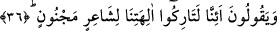
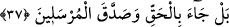
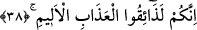
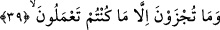

36. «Mecnun bir şair için biz tanrılarımızı bırakacak mıyız?» derlerdi.
“Mecnun” aklına gâlip “bir şair”in sözü “için biz tanrılarımızı bırakacak mıyız?»
derlerdi.” Âyette geçen istifham hemzesi, inkar içindir. Yani biz ilahlarımıza -ki onlar
putlardır- ibadeti terk edecek değiliz. Biz onun sözüyle putlara ibâdeti terk etmeyiz,
demektir.
Kâfirler, Hz. Peygamber (s.a.)’e deli şair demelerinde yalancıdırlar. Halbuki onlar
Hz. Peygamber (s.a.)’in insanların en akıllısı, görüşü en güzel, sözü en tutarlı, şan ve
şerefi en yüce, bütün üstün niteliklerde en önde ve bütün ilim ve mârifetlerde kolu en
uzun olanı olduğunu bilmektedirler. Âl-i İmrân 3/164’te geçtiği üzere Hz. Hatice (r.a.)
validemizin nikah merasiminde Haşimoğulları ve Mudar Kabilesi reislerinin bulunduğu
bir mecliste Ebû Leheb’in okuduğu hutbe ve yaptığı konuşma buna şahittir.
37. Hayır! O, gerçeği getirdi ve peygamberleri de doğruladı.
“Hayır!” iş onların söylediği gibi değildir. Ortada bir şiir ve delilik yoktur. Bilakis
“O,” Hz. Muhammed (s.a.) hak ve “gerçeği getirdi ve” onların da tevhidi getirmeleri
hususunda bütün “peygamberleri de doğruladı.” Binaenaleyh Hz. Muhammed (s.a.)’in
getirdiği, bütün peygamberlerin ittifak ettiği tevhittir. Şiir ve delilik, onun yüce ve nezih
sahasından pek uzaktır.
Her kimin ki akl-ı küllde kemâli olur
O, mecnun değildir; ey hâli karışık olan!
38. Kuşkusuz siz acı azâbı tadacaksınız.
Ey müşrikler! “Kuşkusuz siz” şirk koşmanız, peygamberi yalanlamanız ve
kibretmeniz sebebiyle “acı azâbı tadacaksınız.” Söz gâib olarak devam ederken
burada hitab sîgasına iltifat edilmesi, kâfirlere olan öfke ve gazâbın had safhada
olduğunu ortaya koymak içindir.